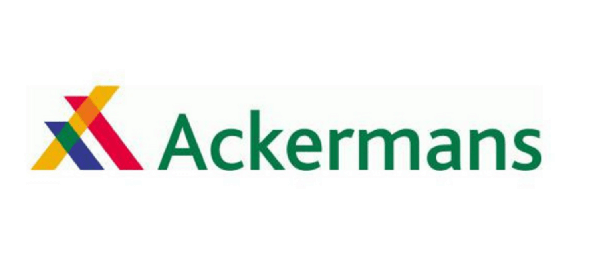
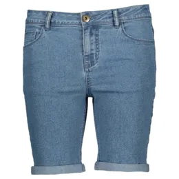

ACKERMANS
Ackermans is a South African chain of clothing retail stores. Founded in 1916 in Wynberg, Cape Town, Ackermans has over 700 stores across Southern Africa, including in Namibia, Botswana, Lesotho, Swaziland and Zambia, and is headquartered in Cape Town. In 2015 Ackermans is rated the second best clothing store by the South African Consumer Satisfaction Index.
Gus Ackerman opened the first Ackermans store in 1916 in Wynberg, Cape Town. Ackermans was sold to Greatermans in 1960 only to be sold again towards the end of the 1970s to Edgars. In 1984 Pepkor acquired Ackermans and its 34 stores. Since then Ackermans has experienced exceptional growth and in the year 2000 it had over 200 outlets across the Southern Africa region.
